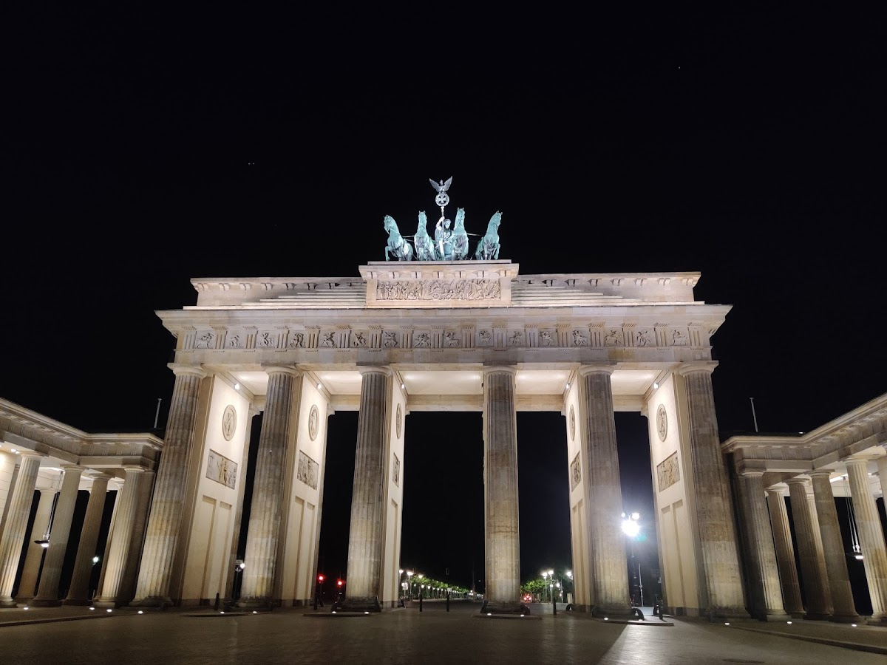
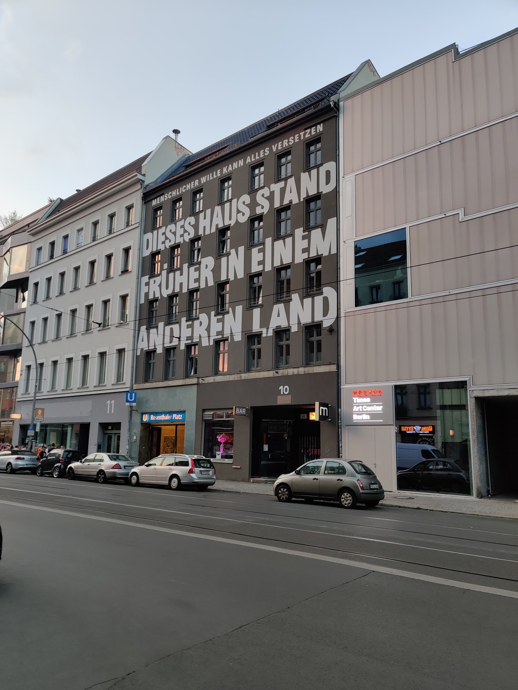
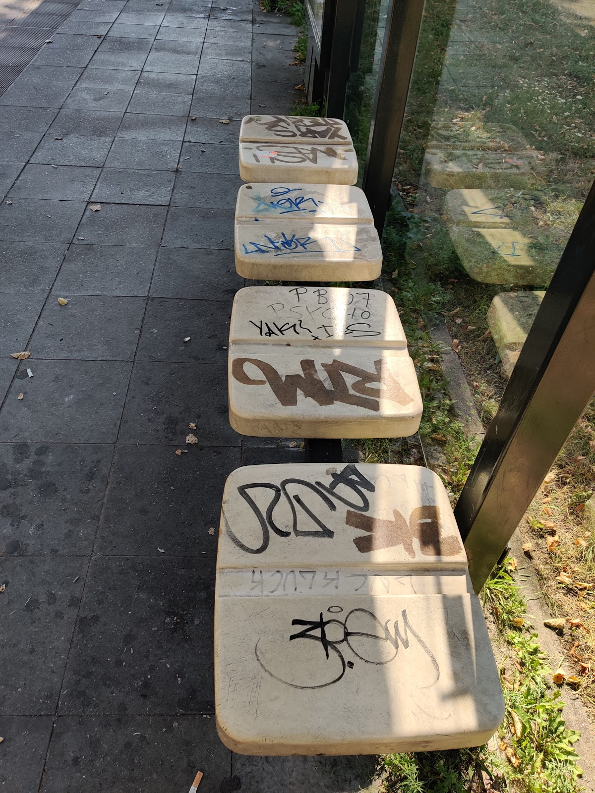
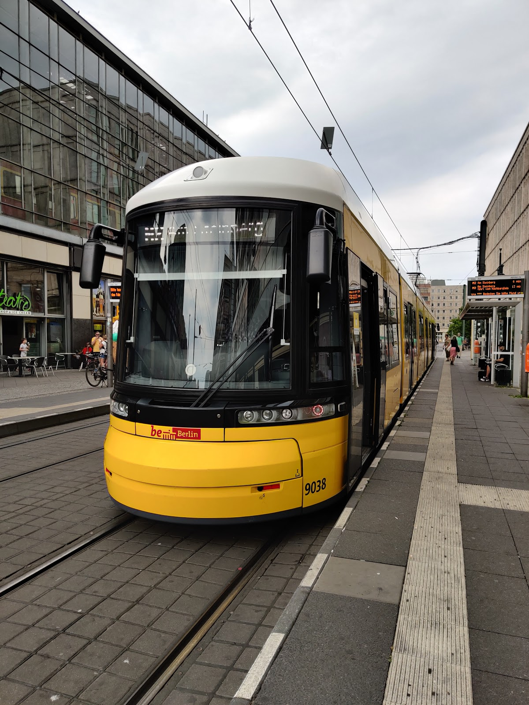
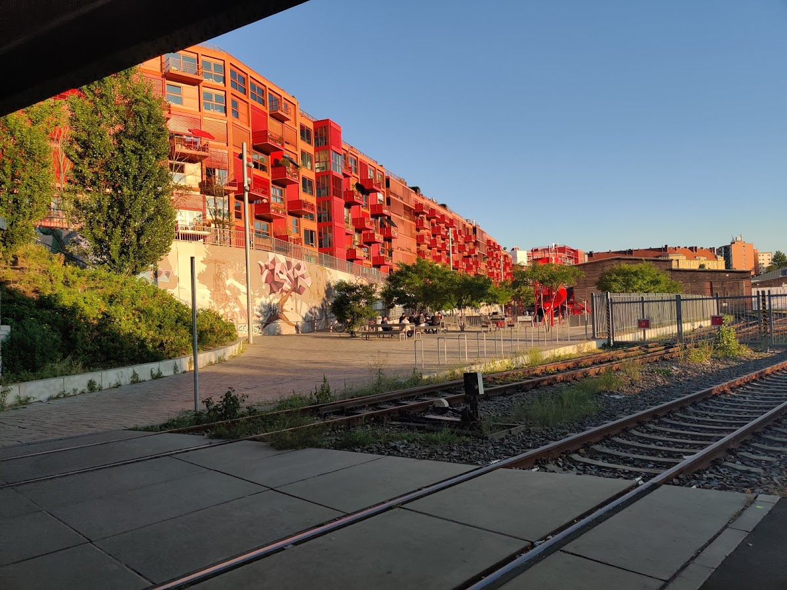

The first thing that struck a note as I exited the Schonefeld airport was Currywurst. This food item encapsulated all history and cultures that were part of my journey - an Indian, living in Britain, visiting Germany. “Wurst” is the German for sausage (as in “Bratwurst”), a food item as staple to Germans as Roti is to Indians. And “Curry” is the British term for, well… most Indian food. At some point during the rebuilding of Germany post WWII someone made the genius discovery that Curry Powder (which the British used), goes very well with ketchup and German sausage.
And then there was the Graffiti. It is everywhere: on the walls, on constructions old and ne, even on public waiting seats at the bus stop! Anything you could put paint on in Berlin, you have Graffiti.


Why is there so little air-conditioning? I had not noticed it until the chatty receptionist at Circus Hostel rhetorically asked me: Have you seen air-conditioning anywhere in Berlin? (I was asking here why there isn’t one at the hostel)
In a city known for its cafes and public transport, it is absurd that none of these spaces are air-conditioned, something especially noticable during the hot days of summer. I heard a bunch different reasons for it: a concern for the environment, building regulations, or because ACs look ugly from the outside.
If you’re wondering how to decadence can thrive side-by-side with social justice, look no further than Berlin, a city in which public drinking is only not illegal, but the norm, and even encouraged, for the bottles you leave behind in the parks or pavements can be picked up and returned in deposited by those who are in need of money. (The recycling deposit ranges from 8-15 cents for glass and 15-25 for plastic)
The Trams truly are marvelous. They cut right throught the middle of the cityand the middle of the road; they seemed super-efficient and accessible; and with their bright yellow colours, they make add another hip factor to the city.
Interesting tid-Bit I discovered on one of these tram rides: Berlin has a street, IndiraGandhiStraBe, named after Indira Gandhi

Lastly, the people. Over the course of my six days, I had some memorable encounters with the people who have made the city their home.
